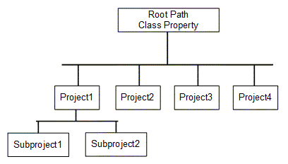

a TANGO class to manage settings : SettingsManager |
|
- Principle: This idea is to standardize and centralize the settings management for the control system.
- Write a settings file with an optional list of attribute as input argument. This class will be responsible to do not write above its subdirectory.
- Apply settings to attributes.
- Get file content to preview file with string as output argument.
- Read a settings file and return content in a pipe (att1 name, att1 value, att2 name, att2 value, ...)
- For Project4, the device sys/settings/project4 will manage files found under $RootPath/Project4
- For Subproject2 the device sys/settings/subproject2 will manages files found under $RootPath/Project1/Subproject2
- The device file path is given by $RootPath and SettingsFilesPath device property
- To generate a settings file, the attribute list could be taken from DefaultAttributeList device property or from input command argument.
- How to control settings changes When a settings file is applied a thread is started.
It will have to be accessible from client applications and servers written in C++, Java or Python.
The most flexible system to store the settings is to use files on disk. Users will be able to manage sub system, copies or edition (device/attribute renaming).
All settings files will be store under a "RootPath" directory.
A subdirectory will be created for each accelerator system.
To be accessible from all languages, a TANGO class will manage read, write and apply settings for attributes.
Each instance of this class will manage a system (SRRF, RIPS, LINAC, ...) files under its own subdirectory fixed by a TANGO property.
This class will be able to:
|  |
|
this thread read the applied attributes (write part) and compare with the applied file content.
If is different, the attribute LastAppliedFile is set to ALARM
The list of changed attributes could be found in AlarmAttributes attribute
The default period to read attributes and compare is fixed to 2 seconds.
But it could be changed using CheckChangePeriod attribute.
See: